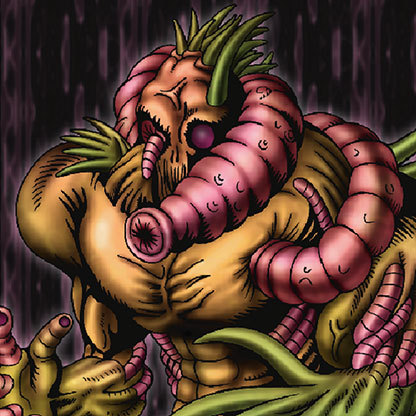

The Wicked Worm Beast

Description: "When destroyed in battle, this card is returned to the deck, and the deck is re-shuffled."
STATS
ATK: 1400
DEF: 700DECK COST
Deck Cost per Card: 26EFFECT NOT IMPLEMENTED
Fusion List (3 Possible Fusions)
- The Wicked Worm Beast + Fairywitch = Garvas
- The Wicked Worm Beast + Dancing Elf = Garvas
- The Wicked Worm Beast + Lunar Queen Elzaim = Garvas